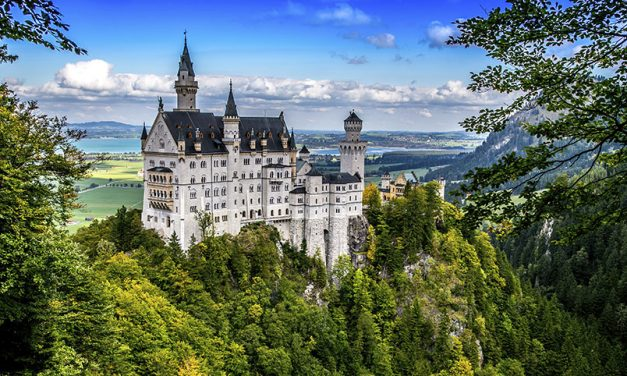

Neuschwanstein! Esta palavrinha difícil é o nome do castelo mais famoso da Alemanha, o castelo que inspirou a criação do mágico cenário da Bela Adormecida! O castelo de Neuschwanstein fica no sul da Alemanha, em um vilarejo chamado Füssen. Neuschwanstein começou a ser construído em 1869 mas nunca foi finalizado. O idealizador do castelo era Luís II, Rei da Baviera. Fanático pela idade média, ele queria um castelo que homenageasse a época mais brilhante da história, segundo ele. Luís cresceu no outro castelo, o Hohenschwagau, que fica ali do lado. Ali começou a sua obsessão pela idade média e pela arte, até que ele foi coroado, em 1864. Só que dois anos depois a Prússia tomou conta do país e Luís começou a viver num universo paralelo, como se ele fosse ainda o Rei da Baviera. Ele gastou as fortunas da família e se endividou muito para concluir o projeto, mas o projeto jamais acabava. Com o tempo, e com os seus credores já bem furiosos, o “rei” foi declarado louco e ele foi internado no Castelo Berg, perto de Munique. Lá, seu corpo foi encontrado no lago Starnbern, em junho de 1886 e ninguém sabe ao certo se ele foi assassinado ou se ele cometeu suicídio. Em Agosto do mesmo ano, o castelo foi aberto ao público pela primeira vez, e desde então é uma das principais atrações turísticas da cidade!
